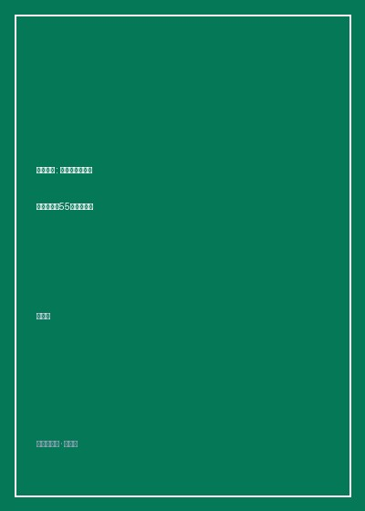

《自学大全》

总体观点
《自学大全》（独学大全）是一部旨在将普通人武装为终身独立探索者的系统性认知工程著作。作者读木达也打破了“学习全凭意志力与天赋”的迷信观念，以行为分析学、认知心理学与图书情报学为坚实底座，将自学过程解构为一个可工程化、可拆解、可调试的精密系统。
全书开创性地将自学者的终极困境归结为四个阶段性瓶颈：为何想学却无法开始、面对庞大领域不知从何下手、读不下去与无法真正理解、以及学完即忘与缺乏反馈。针对每一个节点，作者不讲抽象大道理，而是直接提供极度具体的“技法手册”，涵盖动机外显化、文献树检索、对勘式精读、卡片盒笔记以及间隔检索记忆机制。
作者强调，自学的最高境界不是机械地吞咽现成答案，而是在缺乏学校约束与教师指引的荒野中，学会提出真问题、构筑专属知识地图、并建立抗脆弱的知识反馈回路。这本书既是一部战胜拖延与挫败的心理防御指南，也是一份历经人类两千年学术史沉淀的高密度读书求知技艺典藏。
核心观点
-
1. 意志力是易耗品：用环境改造与行为设计替代痛苦自律
依赖意志力学习注定会因情绪波动与能量耗竭而崩盘。卓越的自学建立在清晰的前置诱因设定与即时反馈回路之上，让学习行为顺应人性流动。
技法“两分钟着手法”规定在面临畏难情绪时，仅要求自己打开书本或敲下两行字，借助启动势能消解杏仁核对庞大任务的恐惧排斥。 -
2. 可能性之门：绘制属于自己的知识地图与文献家族树
在进入陌生学科前，绝不能盲目抓起一本大部头猛啃。应当借助学科词典、核心导论与经典书后参考文献，顺藤摸瓜搭建该领域的全景拓扑图。
通过技法“文献检索三步法”，自学者先查阅权威百科全书词条锁定该学科公认的基础概念，再通过最新博士论文的参考文献顺藤摸瓜找到领域内无可争议的五本奠基原典。 -
3. 刻意对抗假懂：运用对勘阅读与转述翻译淬炼真正理解
阅读中最致命的陷阱是“流畅性错觉”，误以为眼睛看顺了就是脑子掌握了。必须通过多文本对照勘误与向门外汉转述，倒逼逻辑漏洞暴露无遗。
运用“转述笔记法”，自学者在读完一章经济学原理后，合上书本尝试用十岁小孩能够听懂的买菜案例，写下对“比较优势”与“机会成本”的直白解释。 -
4. 对抗遗忘的物理法则：构建基于主动检索的知识外脑
被动重读对形成长期记忆几乎无效。唯有通过痛苦的提取练习、间隔重复以及建立交叉引用的卡片盒笔记系统，知识才能在神经元中扎根生长。
自学者利用“P/F笔记本”（问题/事实分离笔记本），正面仅记录挑衅性核心疑问，反面记录实证事实，定期仅凭问题自测回忆，记忆留存率比反复划线高出四倍。 -
5. 挫折是学习必经的调试信号：建立终身学习者的抗逆韧性
学习停滞与厌烦感不是愚钝的象征，而是当前知识密度与吸收速率出现失衡的系统报警。及时调整坡度与拆小粒子度，是自学者最核心的内功。
当自学微积分遭遇卡壳时，立刻启动“回溯降维技法”，退回初中代数概念查漏补缺，消除概念夹生饭后，再次攻关难度骤降。
全书结构
-
第一部分：为什么学习总是停滞不前（动机与起步技法）
直面自学之初的恐惧、拖延与无力感，提供厘清学习初衷与克服启动阻力的心智工具。
详解“可能之门探寻法”与“自我告白书”，帮助自学者在纸面上彻底剖析为何而学及曾经放弃的深层诱因。 -
第二部分：如何寻找知识并绘制地图（文献与找书术）
传授图书情报学的高阶检索技巧，帮助自学者在海量信息垃圾中迅速锁定经典与核心脉络。
传授如何利用图书馆分类法（NDC/中图法）的相近架位与核心学术期刊综述，快速绘制跨学科知识谱系。 -
第三部分：如何深入阅读并吃透难懂内容（高阶读书法）
汇聚由浅入深的各类阅读兵法，涵盖速读跳读、精读研读、古典对勘读法以及破译艰深公式与句式的手段。
演示“提问式阅读（Q&A reading）”，要求在翻开每一章前先将目录标题改编为三个尖锐问题，带着疑问定向捕获关键段落。 -
第四部分：如何长期记忆并形成体系（记忆与知识管理）
基于认知神经科学，系统介绍如何战胜遗忘曲线、将碎片信息提炼为模块化卡片并沉淀为终身资产。
详细演示卢曼卡片盒笔记法在自学中的本土化改造，展现不同文献卡片如何相互碰撞催生原创洞见。